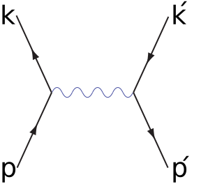
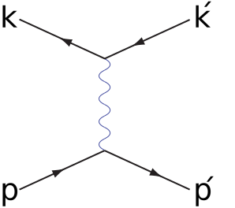
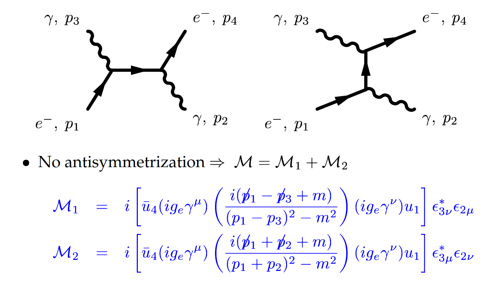

Основы КЭД. Представление взаимодействия. Диаграммы Фейнмана
Рассеяние Баба:


Рассеяние Мёллера:


Квантовая электродинамика — полевая теория, описывающая взаимодействие между заряженными частицами и электромагнитным полем.
Лагранжиан определяется 4 константами: $e$, $m$, $c$, $\hbar$
$$\mathcal{L}_{QED}=\bar{\psi}\left( i\gamma^\mu\partial_\mu -e\gamma^\mu A_\mu - m \right)\psi - \frac{1}{4}\mathcal{F}_{\mu\nu}\mathcal{F}^{\mu\nu}$$
$$\mathcal{F}_{\mu\nu} = \partial_\mu A_\nu - \partial_\nu A_\mu$$
Уравнение Дирака: $$ \left( i \gamma^\mu \partial_\mu - m \right)\psi = e\gamma^\mu A_\mu\psi$$
Уравнения Максвелла: $$ \partial_\nu \mathcal{F}^{\nu \mu} = e\bar{\psi}\gamma^\mu\psi $$
Представление взаимодействия
$$\mathcal{L} = \mathcal{L}_e + \mathcal{L}_\gamma + \mathcal{L}_{int}$$
$\mathcal{L}_e = \bar{\psi}\left( i\gamma^\mu\partial_\mu - m \right)\psi,\ \ \mathcal{L}_e = - \frac{1}{4}\mathcal{F}_{\mu\nu}\mathcal{F}^{\mu\nu},\ \ \mathcal{L}_{int}=- e\bar{\psi} \gamma^\mu \psi A_\mu$
$$\mathcal{L} = \mathcal{L}_e + \mathcal{L}_\gamma + \mathcal{L}_{int}$$
$\mathcal{L}_e = \bar{\psi}\left( i\gamma^\mu\partial_\mu - m \right)\psi,\ \ \mathcal{L}_e = - \frac{1}{4}\mathcal{F}_{\mu\nu}\mathcal{F}^{\mu\nu},\ \ \mathcal{L}_{int}=- e\bar{\psi} \gamma^\mu \psi A_\mu$
Уравнение для свободных электронов: $$ \left( i \gamma^\mu \partial_\mu - m \right)\psi = 0$$ $$\psi_{\mathbf{p},s} = \frac{1}{\sqrt{2\varepsilon}}u_{p,s} e^{-i(\varepsilon t - \mathbf{pr})}, \ \varepsilon=\sqrt{\mathbf{p}^2+m^2}$$
Уравнения для свободных фотонов: $$ \partial_\nu \mathcal{F}^{\nu \mu} = 0 $$ $$A_{\mathbf{k},\mu} = \sqrt{4\pi}\frac{\rm{e}_\mu}{\sqrt{2\omega}} e^{-i(\omega t - \mathbf{kr})}, \ \omega = |\mathbf{k}|$$
Так как электромагнитное взаимодействие слабое ($\alpha\approx1/137\ll 1$), его можно учитывать по теории возмущений. Для вычисления вероятности переходов между начальным и конечным состояниями (рассеяния), являющимися свободными решениями, удобна техника диаграмм Фейнмана:
Комптоновское рассеяние:
Рассеяние Баба:
Рассеяние Мёллера:
Фотон-фотонное взаимодействие: